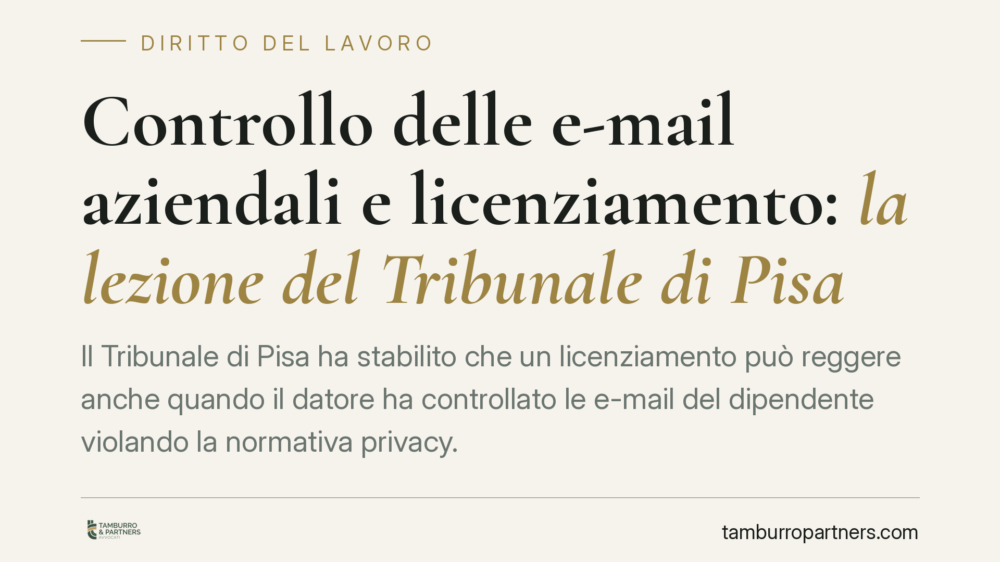
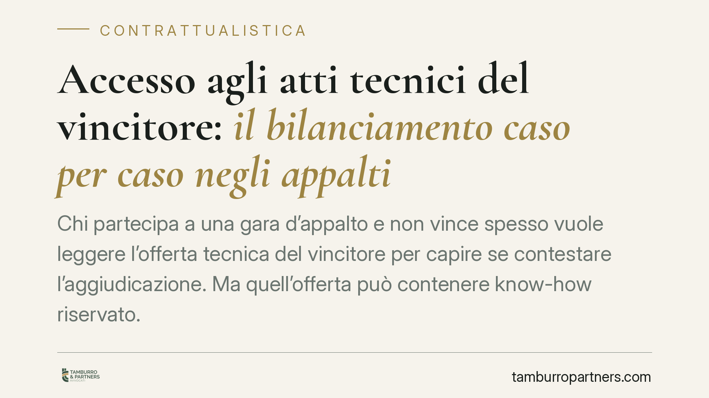
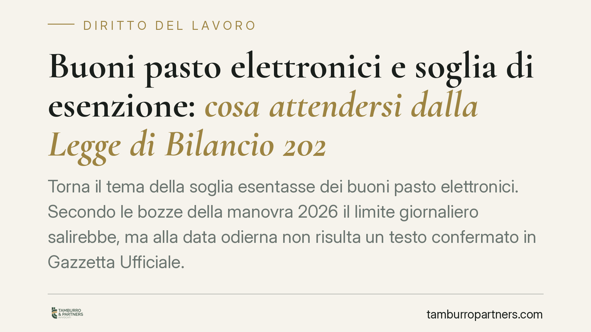
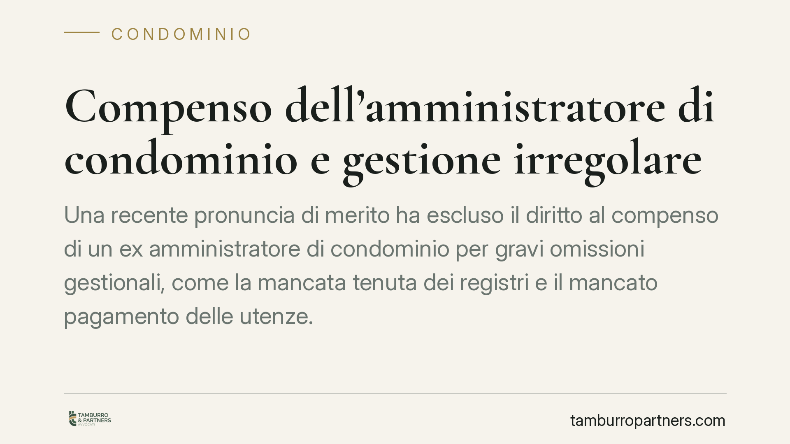
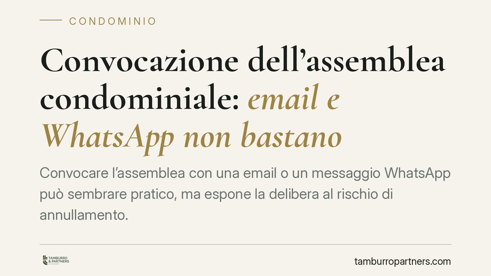
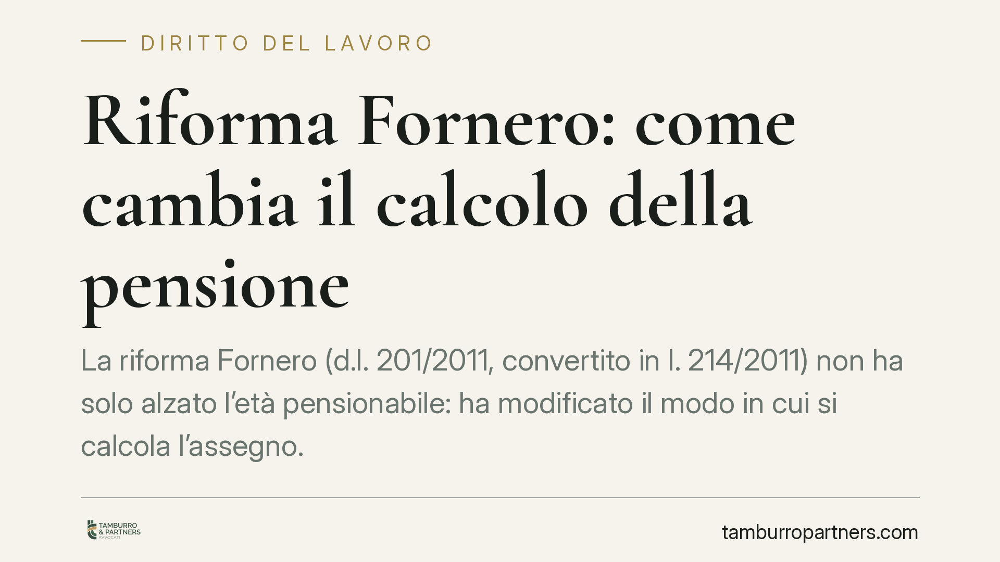

Sgravi e bonus assunzioni: le violazioni che fanno perdere le agevolazioni fino a due anni
Il Ministero del Lavoro ha chiarito quali irregolarità in materia di lavoro e sicurezza precludono l'accesso agli sgravi contributivi e ai bonus assunzioni. La sanzione non è solo …

Vizi di forma in condominio e nel lavoro: quando la procedura annulla l'atto
La forma degli atti non è un ornamento: convocazioni, verbali e contestazioni disciplinari che ignorano le regole procedurali rischiano l'annullamento, anche quando non emerge un d…

Composizione negoziata e crediti contributivi: la falcidia resta esclusa
Il Tribunale di Milano ha escluso la possibilità di ridurre i crediti contributivi nell'ambito della composizione negoziata della crisi. La pronuncia conferma che questa fase strag…

Le regole del condominio che non si possono mai cambiare
Non tutto, in condominio, è negoziabile. Alcune regole restano ferme anche di fronte a un regolamento contrattuale o a una delibera assembleare. Sapere quali norme sono inderogabil…

Colonna di scarico rotta in condominio: chi paga la riparazione e i danni
Quando una colonna di scarico condominiale si rompe, la domanda è sempre la stessa: chi paga la riparazione e i danni provocati? Il Tribunale di Roma, con la sentenza n. 9069 del 2…

Congedo parentale e età dei figli: cosa cambierebbe con la Legge di Bilancio 2026
Si discute di un possibile ampliamento del congedo parentale fino ai 14 anni dei figli. Allo stato la disciplina vigente resta ferma ai 12 anni. Prima di riorganizzare permessi e a…

Sfratto dell'inquilino del locale condominiale: serve l'assemblea?
Il condominio possiede spesso locali comuni concessi in locazione: portinerie dismesse, magazzini, spazi commerciali. Quando l'inquilino non paga, chi decide lo sfratto? Il Tribuna…

Piano Nazionale dell'Economia Sociale: cosa attendersi
Il Forum Terzo Settore ha accolto con favore il Piano Nazionale dell'Economia Sociale, valorizzando finanziamenti, formazione dei volontari e collaborazione tra terzo settore e amm…

Convocazione dell'assemblea condominiale via PEC: quando è valida anche senza registri pubblici
Il Tribunale di Catania ha confermato che convocare l'assemblea di condominio via PEC è valido anche quando l'indirizzo non risulta iscritto nei pubblici registri, purché la comuni…

Regolamento condominiale: quando basta la maggioranza e quando serve l'unanimità
Il regolamento condominiale non è modificabile sempre allo stesso modo. Una recente sentenza del Tribunale di Milano ribadisce una distinzione decisiva: le clausole organizzative s…

Inquilino che disturba i vicini: quando si arriva al rilascio dell'immobile
Una recente pronuncia della Corte d'Appello di Brescia ribadisce che le clausole di buon vicinato inserite nel contratto di locazione hanno valore di obbligo contrattuale. La loro …

La legge Gadda verso il decennale: cosa cambia per gli ETS
La legge 166/2016, nota come legge Gadda, si avvicina al decennale con la prospettiva di ampliare il paniere di beni destinabili a solidarietà. Per gli enti del terzo settore che g…

Permessi 104 e congedi: verso regole più severe negli adempimenti INPS
Circolano indicazioni su un inasprimento degli adempimenti INPS per la gestione dei permessi ex Legge 104 e dei congedi straordinari, con nuovi obblighi nella compilazione del flus…

Licenziamento del portiere condominiale: maggioranze e limiti al motivo ritorsivo
Licenziare il portiere non è una decisione libera dell'assemblea. Occorre distinguere tra la cessazione del singolo rapporto di lavoro, che spetta all'amministratore come datore di…
Transazione senza firma: quando la ratifica orale la rende valida
Una transazione priva di sottoscrizione può comunque produrre effetti se una delle parti la ratifica con dichiarazioni o comportamenti inequivocabili. Lo afferma la Cassazione con …

Controllo delle e-mail aziendali e licenziamento: la lezione del Tribunale di Pisa
Il Tribunale di Pisa ha stabilito che un licenziamento può reggere anche quando il datore ha controllato le e-mail del dipendente violando la normativa privacy. La prova, pur racco…
Balconi condominiali: quando la delibera dell'assemblea è valida
L'assemblea condominiale non può decidere su ciò che appartiene al singolo. Sui balconi il confine è sottile: dipende dalla loro struttura e dalla funzione degli elementi che li co…
Provvigione dell'agente immobiliare e obblighi informativi: cosa succede se sbaglia
L'agente immobiliare deve verificare e comunicare le informazioni rilevanti sull'immobile, incluso il regolamento condominiale. Una recente pronuncia di merito torna sul tema del c…

Accesso agli atti tecnici del vincitore: il bilanciamento caso per caso negli appalti
Chi partecipa a una gara d'appalto e non vince spesso vuole leggere l'offerta tecnica del vincitore per capire se contestare l'aggiudicazione. Ma quell'offerta può contenere know-h…

Buoni pasto elettronici e soglia di esenzione: cosa attendersi dalla Legge di Bilancio 2026
Torna il tema della soglia esentasse dei buoni pasto elettronici. Secondo le bozze della manovra 2026 il limite giornaliero salirebbe, ma alla data odierna non risulta un testo con…
TFR del lavoratore deceduto: entra nell'asse ereditario?
Quando un lavoratore muore mentre il rapporto è ancora in corso, il TFR maturato spetta ai familiari indicati dalla legge, ma non transita nell'asse ereditario e non sconta l'impos…
Aggiornamento ISTAT del canone commerciale: cosa può recuperare il locatore
Il locatore che per anni non ha chiesto l'aggiornamento ISTAT del canone non può recuperare gli importi arretrati non domandati. Può però aggiornare il canone attuale in un'unica s…
Docenti precari e ferie non godute: quando spetta l'indennità sostitutiva
Il docente supplente che non ha potuto fruire delle ferie ha diritto a un'indennità sostitutiva? La questione ruota attorno alla distinzione tra i periodi di sospensione delle lezi…
Eccessiva onerosità sopravvenuta: quando il contratto si può sciogliere
Quando i costi di esecuzione di un contratto aumentano in modo imprevedibile, la parte gravata può chiederne la risoluzione per eccessiva onerosità sopravvenuta. L'art. 1467 del co…
Timbrare per il collega presente: quando il licenziamento è sproporzionato
La timbratura del cartellino per un collega non integra automaticamente una giusta causa di licenziamento. Con una recente pronuncia, la Corte d'Appello di Napoli ha distinto tra l…

Compenso dell'amministratore di condominio e gestione irregolare
Una recente pronuncia di merito ha escluso il diritto al compenso di un ex amministratore di condominio per gravi omissioni gestionali, come la mancata tenuta dei registri e il man…
Polizza infortuni e malattia: fin dove arriva davvero la copertura
Molti sottoscrivono una polizza infortuni convinti di essere protetti da ogni evento pregiudizievole per la salute. La giurisprudenza di legittimità ricorda però un confine netto: …

Convocazione dell'assemblea condominiale: email e WhatsApp non bastano
Convocare l'assemblea condominiale via email o WhatsApp non è sufficiente. La Corte di Cassazione, con l'ordinanza 16399/2025, ribadisce che la legge impone forme precise di comuni…

Riforma Fornero: come cambia il calcolo della pensione
La riforma Fornero (d.l. 201/2011, convertito in l. 214/2011) non ha solo alzato l'età pensionabile: ha modificato il modo in cui si calcola l'assegno. Dal 2012 il metodo contribut…
Emergenza caldo sul lavoro: controlli INL e sospensione dell'attività
L'Ispettorato Nazionale del Lavoro rafforza le verifiche sulla tutela dei lavoratori esposti alle alte temperature. Gli ispettori controllano l'aggiornamento della valutazione dei …